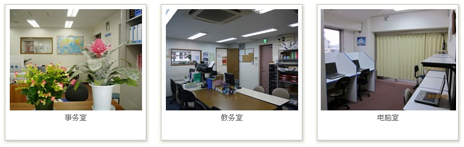
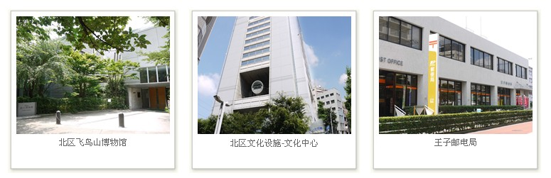
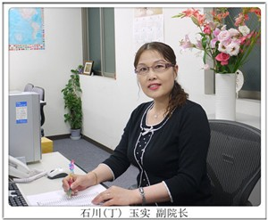

EndFragment School Introduction The predecessor of Asia Friends Association Foreign Language Institute was Asia Friends Association Japanese Language School. It was officially registered in Japan on April 1, 1990, and certified by the Japanese Language Education Promotion Foundation. For many years, it has been recognized as an excellent school by the Tokyo Immigration Bureau of the Ministry of Justice and has been recognized by the Chinese Embassy in Japan...
EndFragment
School Introduction
The predecessor of Asia Friendship Association Foreign Language Institute was Asia Friendship Association Japanese Language School. It was officially registered in Japan on April 1, 1990, and certified by the Japanese Language Education Promotion Association Foundation. For many years, it has been recognized as an excellent school by the Tokyo Immigration Bureau of the Ministry of Justice, and by the Education Division of the Chinese Embassy in Japan, it is recognized as a self-funded study abroad and Sino-foreign cooperative education cooperation institution.
The predecessor of Asia Friendship Association Foreign Language Institute was Asia Friendship Association Japanese Language School. It was officially registered in Japan on April 1, 1990, and certified by the Japanese Language Education Promotion Association Foundation. For many years, it has been recognized as an excellent school by the Tokyo Immigration Bureau of the Ministry of Justice, and by the Education Division of the Chinese Embassy in Japan, it is recognized as a self-funded study abroad and Sino-foreign cooperative education cooperation institution.
School advantages
● Experienced and responsible teaching staff.
● All rules and regulations are sound and strictly managed (attendance rate is on a clock-in system).
● Each class is small (10~20 students), with two sessions (morning and afternoon).
● Free tutoring classes for the Japanese University Admission for International Students and the Japanese Language Proficiency Test.
● Free graduate school prep classes.
● Emphasis on college entrance guidance, with a 100% admission rate.
● Comprehensive scholarship system.
● Secure student dormitories are available.
● Equipped with Chinese language teachers—bringing convenience to students who are new to Japan EndFragment
● Asia Friends Association Japanese Language School has signed friendly cooperation agreements with several Chinese universities, allowing undergraduate Japanese students to study for one year (3+1 program) at Asia Friends Association Japanese Language School.

School Features
1. Experienced and responsible teaching staff
The teachers are not only experienced and lively in teaching, but also responsible, patient, and enthusiastic.
2. Each class adopts a small class size system and a two-part teaching system
Students are divided into classes based on their Japanese proficiency through exams, with each class using a small group size. There are morning and afternoon classes.
3. Guidance and Admission Rates
During the advancement period, each class's homeroom teacher and college counselor conduct one-on-one conversations with students. After carefully understanding students' aspirations, they patiently provide guidance, provide advancement information at any time, and offer multiple pre-exam guidance sessions. The school also invites graduates with advanced education experience to hold admission briefings. As for the admission rate, at the time of graduation, a very small number of students can be admitted to national universities, private universities, or vocational schools except for those who wish to return to their home country due to special family circumstances, achieving a 100% admission rate.
4. Free tutoring classes for the Japanese University Admission for International Students and the Japanese Language Proficiency Test
To prepare for the Examination for Japanese University Admission for International Students in June and November each year and the Japanese Language Proficiency Test in July and December, our school offers free tutoring classes for mathematics, integrated subjects, and the Japanese Language Proficiency Test several months before the exams.
5. Free graduate school entrance counseling classes
Various tutoring is provided to prepare students for graduate school admission. For example: guidance on writing research proposals and interview responses. They also guide students on how to choose graduate schools and contact advisors, how to fill out applications, and how to prepare materials. They also conduct one-on-one interviews and provide guidance.
6. All rules and regulations are sound, and management is rigorous
EndFragment
According to various rules and regulations, rewards and penalties are clearly defined. Our school uses attendance cards to manage attendance rates; it is a clock-in system. Attendance rates are announced at the beginning of each month. Regular exam results are also published on the bulletin board
7. Scholarship system
Students who complete the required courses for each academic system, have clear learning goals, excellent grades, high attendance rates, and good conduct may receive scholarships based on the relevant scholarship system regulations and evaluation after evaluation. There are various types of scholarships. The largest scholarship is awarded by the Japan Student Services Organization, which is 48,000 yen per month, totaling 576,000 yen per year. The university also has a special scholarship system for international students, awarding scholarships to those who perform excellently in entrance exams.
8. Enjoy a pleasant school life
To ensure students have a pleasant and practical school life, we organize extracurricular activities for them. For example, field trips, climbing Mount Fuji, and participating in sports meets.
9. Student dormitories
To ensure students can study and live with peace of mind, the school has safe dormitories in multiple locations.
10. Convenient transportation
The school is located in Oji, Kita Ward, Tokyo, with excellent transport links: a 5-minute walk to the tram and bus stops, 3 minutes to the subway, and just 9 minutes to Ueno, 11 to Ikebukuro, 12 to Akihabara and 19 to Shinjuku. Libraries, parks, supermarkets and 24-hour convenience stores nearby make it a convenient area for studying, walking, shopping and part-time work after class.
11. Having a Chinese language teacher—bringing convenience to students new to Japan
Many students living and studying in Japan are not familiar with or understand many things. To ensure students can study and live in Japan with peace of mind, Chinese language teachers patiently guide first-time students. Chinese parents are present
EndFragmentIf you need urgent contact with your child or want to understand their current situation, you can call the school in Chinese. Our school has teachers who speak Chinese, Korean, and English. The school will regularly report students' performance at school to domestic study abroad agencies or parents.


12. EndFragment for visa renewal (extension) procedures
During your studies at our university, when renewing your visa, according to university regulations, if your attendance rate exceeds 90%, the school will handle the visa renewal procedures on your behalf.

EndFragmentSurrounding environment

Messages for parents and new students
Ishikawa (Dō) Tamaki

Whenever I go to China for entrance selection exams (written test and interview), I am deeply moved by the eager and eager looks of parents who "hope their children will succeed." I cannot forget the parents' kind, expectant, and anxious looks. I also cannot forget the tense yet serious looks of students during exams, their passionate and hopeful ....... I deeply understand the responsibility I bear. I am a mother myself and have personally experienced what it is like when my child studies abroad. Therefore, I am very understanding of parents' feelings.
I have worked in student affairs for many years and have always been strict with students and clear rewards and punishments. I praise and reward students who perform well, harshly criticize those who are lagging, and patiently have heart-to-heart talks again and again, until I am persuaded. I have never given up on any student. I believe that to be a teacher whom parents trust and whom students respect, trust, and love, one must first have firm beliefs and a sense of responsibility, and second, must be caring. Moreover, one must be enthusiastic about every student and act fairly. From my many years of experience, as long as it is for the students' best interests and how strict the rules are, students will humbly accept and understand. Over the years, I have sent off batch after batch of students. Whenever graduates visit or call to greet me, I am very happy. Especially when students who had been mischievous and angered me at school also came to school or called to check on me, I was even more excited; Whenever they reported their joys, anger, sorrows, and happiness, I was filled with mixed emotions and found it hard to calm down. I think no words can describe this precious ...... of affection between teachers and students.
There is a Chinese saying: "A strict teacher produces outstanding students." All faculty and staff at our school approach everything from the perspective of the students. While strictly managing students, they devote themselves fully to teaching Japanese, providing guidance for further studies, and enthusiastically teaching Japanese culture and etiquette. The common sentiment of parents during the interview: "We like a school that is responsible to students and strictly manages it," remains ......vivid in my memory. Dear parents: We will not let down the trust and support you have in our school.
Students, please do not forget the earnest expectations of your parents and loved ones. And never forget your purpose and goals for studying in Japan. Do not forget that only through relentless effort can you reach the shore of success. Firmly believe: "Where there is a will, there is a way." Opportunity cannot be missed; time will not come. Work hard for a better tomorrow!!
Finally, I sincerely wish all parents good health and all the best! I sincerely wish all students success and all your wishes come true. End Fragment End Fragment EndFragment
EndFragment
学校简介
亚细亚友之会外语学院的前身是亚细亚友之会日本语学校。于1990年4月1日在日本正式注册设立、并经财团法人日本语教育振兴协会认定的语言学校。多年来一直被法务省东京入国管理局认定为优良校，被中国驻日本大使馆教育处认定为自费出国留学及中外合作办学合作对象法人资格的学校。
亚细亚友之会外语学院的前身是亚细亚友之会日本语学校。于1990年4月1日在日本正式注册设立、并经财团法人日本语教育振兴协会认定的语言学校。多年来一直被法务省东京入国管理局认定为优良校，被中国驻日本大使馆教育处认定为自费出国留学及中外合作办学合作对象法人资格的学校。
学校优势
● 拥有经验丰富、认真负责的教师队伍。
● 各项规章制度健全、管理严格（出勤率实行打卡制）。
● 每班少人数制（10～20名），二部制授课（上午班、下午班）。
● 免费开设日本留学考试和日本语能力考试的辅导班。
● 免费开设大学院升学辅导班。
● 重视升学指导，升学率100%。
● 奖学金制度健全。
● 备有安全的学生宿舍。
● 有中国语担当老师—- 给初到日本生活的学生们带来方便。 EndFragment
● 亚细亚友之会日本语学校与中国多家大学签订了友好合作协议，大学本科在读日语系的学生来亚细亚友之会日本语学校学习一年（3＋1项目）。
学校特色
1.拥有经验丰富、认真负责的教师队伍
教师们不但经验丰富、讲课生动活泼，而且认真负责、耐心指导、非常热心。
2.采用每班少人数制，二部制授课
按着学生们的日语水平经考试进行分班，每班采用少人数制。分上午班和下午班。
3.升学指导和升学率
进入升学时期，每个班级的班主任和升学指导负责人，对学生进行一对一的谈话，在细心的了解学生的志愿后，进行耐心的辅导，随时为学生提供升学信息，还为学生提供多次考前面试指导。本校还邀请有升学经验的毕业生召开升学说明会。至于升学率，在本校毕业时，极个别学生由于家里有特殊情况，本人要求回国之外，其他的学生都能考入国立大学，私立大学或专门学校，升学率可以说100%。
4.免费开设日本留学考试和日本语能力考试的辅导班
为了每年的6月和11月的日本留学考试和7月、12月的日本语能力考试，我校在考试前几个月免费设数学、综合科目等辅导班和日本语能力考试辅导班。
5.免费开设大学院升学辅导班
为准备考入大学院的学生，进行各种辅导。比如：辅导研究计划书的写作方法、面试对应法。还指导如何选择大学院并与导师联系、如何填报志愿、如何准备资料等。还进行一对一的面谈并指导。
6.各项规章制度健全，管理严谨
EndFragment
根据各项规章制度，奖惩分明。我校是用出勤卡来管理出勤率，打卡制。每月初公布出勤率。定期考试的成绩也发榜公布
7.奖学金制度
在本校学完各学制的规定课程，学习目的明确，成绩优秀，出勤率高、品行端正者，可根据学校的奖学金制度的有关规定，经评定后将获得奖学金。奖学金分多种类型。最多的可获得日本学生支援机构发放的奖学金，每个月48，000日元，年总额576，000日元。学校又特设了留学生特别奖学金制度，对于在入学考试中，成绩优秀者发放奖学金。
8.愉快的学校生活
为了使学生们在本校度过愉快而从实的学校生活，本校特为学生组织课外活动。比如郊游、上富士山、参加运动会等。
9.学生宿舍
为了使学生们安心地学习并生活，学校在多处备有安全的宿舍。
10.交通便利
本校位于东京都北区王子，交通特别便利。学校离电车站、客车站只有徒步5分钟，离地铁站只有徒步3分钟。距离东京繁华区域<上野>只需9分钟，池袋需11分钟，<秋叶原>需12分钟，<新宿>需19分钟。学校附近有图书馆、公园、超市、24小时便利店。是学生们放学后自习、散步、逛街和打工便利的好地方。
11.有中国语担当老师—给初到日本生活的学生们带来方便
初到日本生活和学习的学生，很多事情不习惯、不明白。为了使学生们安心的在日本学习和生活，由中国语担当老师耐心地指导初来日的学生。中国的父母如有
EndFragment急事想与子女联络或者想了解子女现状的话，可用中文往学校打电话。本校有懂中文、韩国语、英语的老师。校方将定期向国内的留学中介公司或者家长汇报学生的在校表现情况。
12.代办签证更新（延期）手续 EndFragment
在本校学习期间，签证更新时，按着本校的规定，对于出勤率达到90%以上者，由校方代办签证的更新手续。
EndFragment
周边环境
赠家长和新生的寄语
石川(丁) 玉实
每当我到中国进行入学选拔考试（笔试和面试）的时候，都被家长们那“望子成龙”心切的目光、迫切的心情所深深感动。我忘不了家长们那亲切的目光、期待的目光、不安的目光。也忘不了学生们考试时那紧张而又认真的目光、充满激情和希望的目光……。我深知自己所肩负的责任。我自己也是有孩子的母亲，也亲身经历过孩子出国留学时的体验。因此我非常体谅家长们的心情。
我做学生工作多年，对学生一向要求严格，奖惩分明。对于表现好的学生进行表扬和奖励，对于落后的学生进行严厉的批评并耐心的一次又一次的谈心，直到说服为止，我从来没有放弃过每一位学生。我认为要想做家长们所放心，让学生们所尊敬、信赖、喜爱的老师，首先应该有坚定的信念和责任心，再者必须要有爱心，而且对于每一位学生都要热心，做事要公平。从我多年的经验来谈，只要是为学生们好，再严厉，学生们是都能够虚心接受并理解的。多年来送走了一批又一批的学生，每当毕业生们来学校看望、来电话问候的时候，令我非常高兴。尤其是在学校的时候调皮捣蛋惹我生气和发火过的学生也来学校或来电话问候的时候，更令我激动不已；每当他们汇报喜怒哀乐的时候，令我悲喜交加、心情难以平静。我想用任何语言难以描述师生之前这种珍贵的情意……。
中国有句俗话：“严师出高徒”。我们学校的全体教职员工都是以一切都是为了学生的角度出发，在严格管理学生的同时，全力以赴讲授日语、进行升学指导，还热心的讲授日本的文化、礼仪等。面试时家长们的共同心声：“我们喜欢对学生负责任、管理严格的学校”之言，至今仍记忆犹新……。尊敬的家长们：我们不会辜负各位家长对于本校的信赖与支持。
同学们，请你们不要忘了家长和亲人们对于你们的殷切期望。更不能忘记自己来日本留学的目的和目标。不要忘了经过不懈的努力，才能到达成功的彼岸。要深信：“有志者事竟成”。机不可失，时不再来。为了美好的明天而加油吧！！
最后衷心祝愿各位家长身体健康、万事如意！衷心祝愿各位学生一切顺利、心想事成EndFragmentEndFragment
English edition. Select 中文原文 to compare with the original Chinese article.
This article is edited and published by Liaoning Overseas Study Service Co., Ltd. The content is for study abroad planning reference only. Unauthorized reproduction is prohibited.
Information on policies, regulations, admissions brochures, and program fees is timely. Please refer to the latest releases from official institutions and institutions in various countries; For detailed verification, please Contact an advisor。